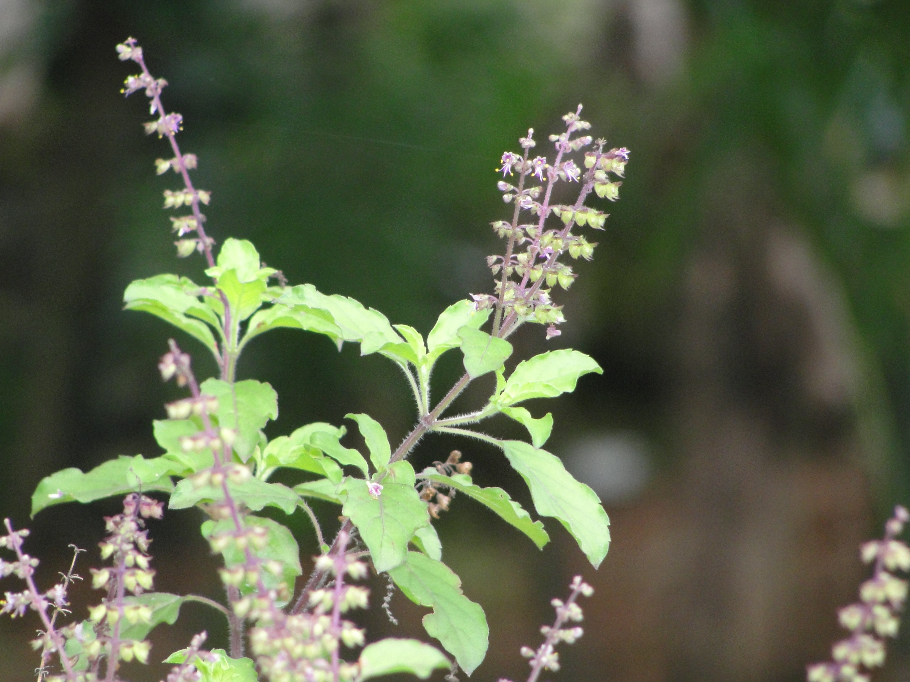

Community knowledge • Conservation first
New • immersive plant discovery flow
Community Medicinal Plant Knowledge & Conservation Platform
Search plants by symptom, common name, scientific name, local language, family, region, and traditional use while helping communities protect living medicinal gardens.
AI-ready search design]
QR garden profiles
Admin verification flow
⌕
Smart suggestions will appear as you search.

Featured
Tulsi
Ocimum tenuiflorum • Lamiaceae
Find by symptom, local name, scientific name, family, or region.
Open visual slides with photos, preparation examples, and care notes.
Submit observations, garden markers, and verified QR-linked records.
Search Results
Traditionally used plants

Plant profile

Tulsi
Ocimum tenuiflorum • Lamiaceae
A medicinal plant from the EPICS community plant collection.
Local nameTulasi
FamilyLamiaceae
RegionSouth India
PDF guideAvailable
Traditional plant knowledge for community education and conservation.
Share this plant guide
Scan to open this plant's educational PDF.
Categories
Browse educational groupings
Traditionally referenced plants for breathing and seasonal comfort.
Herbs commonly discussed for digestion and appetite support.
External preparation knowledge with clear plant-part documentation.
Community knowledge around general wellness rituals.
Carefully labeled traditional references with disclaimers.
Everyday plants, preparation, and conservation notes.
Symptom Explorer
Select symptoms to explore traditional plant references
Choose one or more symptoms to see educational plant references.